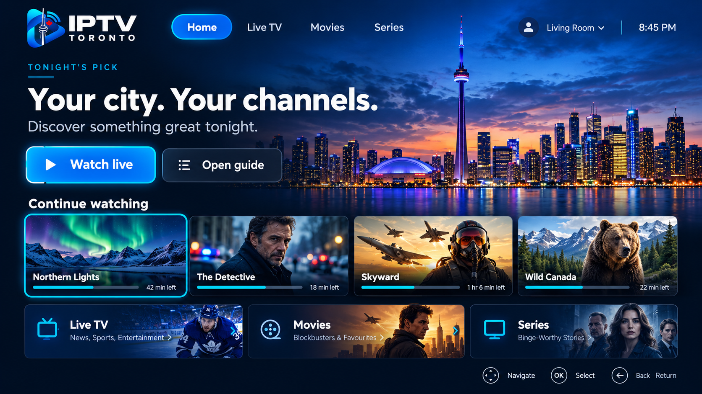

Life happens.
Pick up where you left off.
Explore a guide built around clear listings, familiar navigation and a focused viewing experience.
18:00
20:45 YOUR TIME
A fresh perspective on your screen. Explore our vision for live TV, movies and series — inspired by the city we call home.
From front-row moments to faraway places.
Make room for a new favourite.
Seven views. One unmistakable identity.
Explore the supplied interface concepts.

Illustrative interface references only. Channels, titles and controls shown are not a live catalogue or a promise of availability.
A thoughtful experience, from the first tap
to the last episode.
Explore a guide built around clear listings, familiar navigation and a focused viewing experience.
A cinematic player concept with prominent controls. Actual quality depends on your provider, device and connection.
Dedicated spaces for live TV, movies and series. Explore the supplied interface concepts below.
Confirm the details before you choose.
Current plans and prices are awaiting verification.
Ask about trial availability and test your preferred device before making a decision.
Prepare your screen count, device and viewing preferences for a tailored plan enquiry.
Explore service enquiries ↗Browse installation guides or prepare a support request with your device details.
Design preview: requests are downloaded to your device. Trial activation and message delivery are not connected.
Find guidance for your device. Compatibility depends on the model, app and provider.
Your big-screen experience starts here.
IPTV delivers television over an internet connection. Access to particular channels and titles depends on the provider and its rights to supply that content.
Yes. Prepare a trial enquiry using the button above. This preview downloads your request locally; it does not send it or activate a service. Trial terms await confirmation.
Browse our device setup guides for Fire TV, Android TV, Smart TV and mobile or computer options. Confirm your exact model, app and provider compatibility before subscribing.
Current prices, channel availability and licensing have not been verified for IPTV TORONTO. Ask for written confirmation of your plan, channels, screen limits and terms before paying.
The seven screens are supplied design references. They illustrate the experience and do not provide live streams or promise the titles shown.